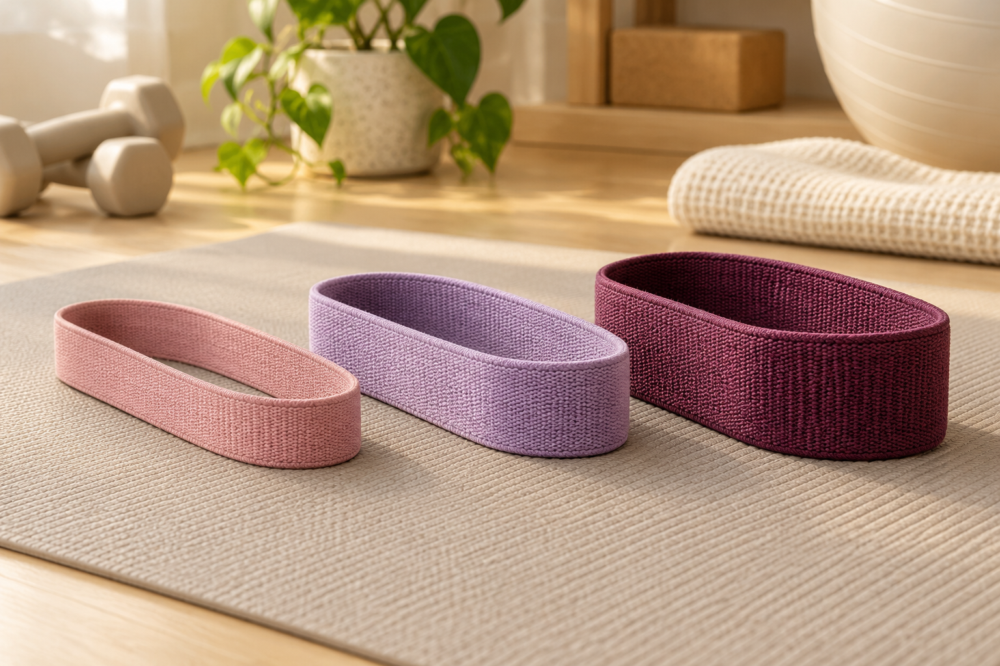

Erster Eintrag
–Noch kein Gewicht erfasstEin Moment für dich
Dein Weg.
Dein Tempo.
Gewicht, Körpermaße und Fotos – dein persönlicher Blick auf deinen Fortschritt.
Nur Marcel und Ramona haben Zugriff. Eure Anmeldung gilt gemeinsam für Garten, Rezepte und Abnehmen in diesem Browser. Eine öffentliche Registrierung ist nicht möglich. Nach 10 Minuten ohne Bedienung dieser Apps werdet ihr gemeinsam abgemeldet.
Wieder Zugang finden
Passwort vergessen?
Fordere einen Link an. Er führt dich hierher zurück, damit du ein neues Passwort festlegen kannst.
Den neuesten Link bitte im selben Browser auf diesem Gerät öffnen. Schau auch im Spamordner nach. Das neue Passwort gilt für alle drei Apps.
Dein Zugang
Ein neues Passwort.
Lege dein neues Passwort für Garten, Rezepte und Abnehmen fest.
Dein Konto ist hier nicht freigeschaltet.
Nur die beiden fest freigegebenen Konten von Marcel und Ramona erhalten Zugriff.
Dein Wochen-Check-in
Dein Fortschritt zum Eintragen
Alles an einem Platz.
Deine Auswertung
Zuletzt erfasst
–Dein Tagebuch wartet auf dichVeränderung seit Beginn
–Jeder Verlauf ist individuellDein Gewichtsverlauf
Laufende Auswertung
BMI = Gewicht ÷ Körpergröße² in Metern. Er ist ein grober Orientierungswert und beschreibt nicht allein Gesundheit oder Körperzusammensetzung.
Kalender & Einträge
Kalender & frühere Check-ins ·
G = Gewicht · M = Maße · F = Foto
Ein Klick auf einen Tag lädt den gemeinsamen Check-in zum Bearbeiten.
Deine Gewichtseinträge
Deine Körpermaße
Deine private Fotogalerie
Deine Fotogalerie
Nur für eure beiden Konten. Das Aufnahmedatum zählt, auch bei später hochgeladenen Fotos. Zum Vergrößern ein Bild auswählen.
Dein Training zu Hause
Ausdauer, Kraft und Erholung gehören zusammen. Du wählst Tempo und Band so, dass jede Bewegung kontrolliert und beschwerdefrei bleibt.
Der Wochenplan ist ein veränderbarer Trainingsvorschlag. Baue nur auf, wenn du die vorherige Stufe gut verträgst. Für bereits Aktive führt der Aufbau zu etwa 150 Minuten moderater Ausdauer pro Woche und zwei Krafteinheiten. Die Krafttage liegen auseinander.
Deine Übungen
Bandstärken richtig wählen

Leicht, mittel und kräftig sind relative Angaben des jeweiligen Herstellers. Farben sind nicht genormt. Wähle den Widerstand so, dass am Satzende noch etwa zwei bis drei saubere Wiederholungen möglich wären. Beim Einstieg in eine neue Übung zunächst das leichtere Band nutzen.
Dein Training dokumentieren
Gut und sicher trainieren
Vor jeder Einheit 3–5 Minuten locker aufwärmen. Zwischen Kraftsätzen 45–90 Sekunden pausieren, ruhig weiteratmen und Belastung schrittweise erhöhen. Krafttraining stärkt die Muskulatur; eine gezielte Fettabnahme nur an Bauch, Beinen oder Po lässt sich damit nicht festlegen. Hautstraffung lässt sich nicht versprechen.
Bei Schmerzen die Übung abbrechen. Bei Brustschmerz, starker ungewohnter Atemnot oder Schwindel pausieren und medizinische Hilfe suchen. Ärztliche Vorgaben, Schwangerschaft oder bestehende Beschwerden gehen diesem allgemeinen Vorschlag vor.
Orientierung: WHO-Bewegungsempfehlungen · Krafttraining und Beweglichkeit. Die Übungsbilder sind KI-generierte Demonstrationen einer fiktiven erwachsenen Trainingsperson.
Essen, das zu deinem Alltag passt
Sättigend und ausgewogen
Plane regelmäßige Mahlzeiten mit einer Eiweißquelle, Gemüse oder Obst und sättigenden Ballaststoffen. Low-Carb ist eine mögliche Auswahlhilfe; entscheidend sind ein passender Energiehaushalt und eine Ernährung, die du langfristig gut verträgst.
Die Rezeptwerte sind aus Zutaten und Referenzdaten berechnet. Für genaue Markenwerte kannst du in der Rezepte-App die Packungsangaben verwenden. Die App kennt deine tatsächlich gegessenen Mengen nur, wenn du sie mitteilst.
Einzelne Wiegetage zeigen auch Flüssigkeit, Salz, Verdauung und Zykluseinflüsse. Bewerte mehrere Wochen gemeinsam. Dein Wohlbefinden, Kraft und Alltagstauglichkeit zählen mit.
Ohne vollständige persönliche Angaben werden keine individuellen Kalorienvorgaben erfunden. Bei anhaltend sehr schneller Abnahme, Beschwerden oder Unsicherheit über das Ziel ist fachliche Begleitung sinnvoll. Hinweise zum nachhaltigen Abnehmen
Deine Angaben & Ziele
Deine bestätigte Körpergröße
Dieser Wert wird für BMI und Auswertungen wiederverwendet. Bitte die gemessene Größe eintragen.
Was der Begleiter wissen darf
Zyklus freiwillig dokumentieren
Periodentage können helfen, Gewichtsschwankungen einzuordnen. Daraus berechnen wir keinen vermeintlichen Fettanteil und ziehen keine geschätzten Wasserkilos vom BMI ab.
Diese Angaben bleiben in eurem privaten Tagebuch. Es werden keine fruchtbaren Tage oder sicheren Verhütungszeiträume vorhergesagt. Informationen zu Zyklusbeschwerden
Aus einem anderen Chat übernehmen
Andere ChatGPT-Unterhaltungen sind nicht automatisch verbunden. Du kannst einen relevanten Text hier einfügen. Für relative Angaben wie „heute“ brauchen wir das tatsächliche Datum des ursprünglichen Gesprächs.